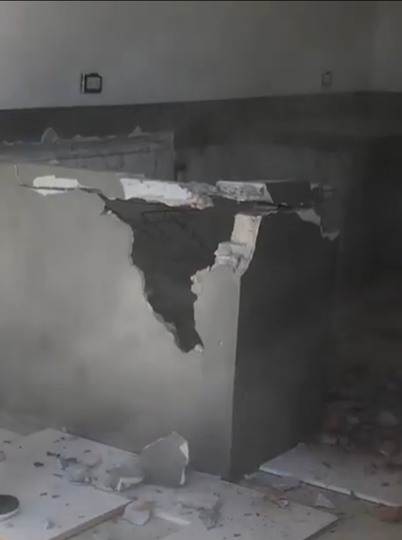
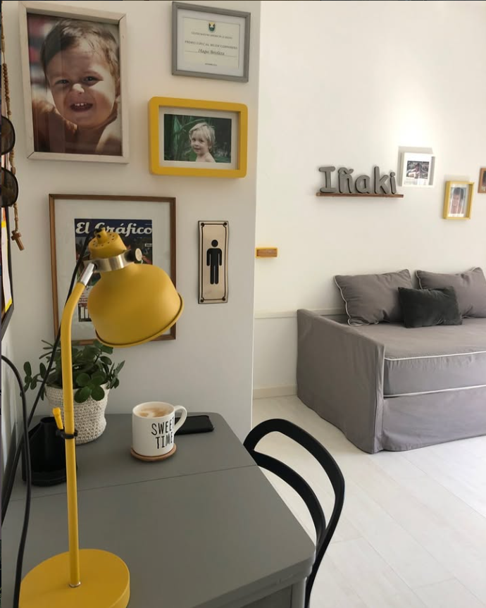
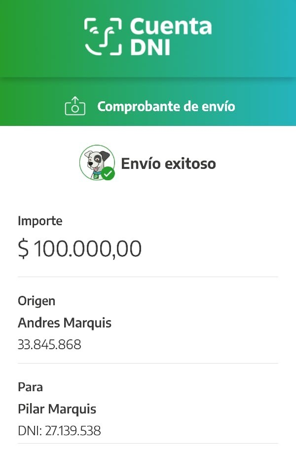

# Efecto “pared que se derrumba” usando tiles + canvas
La idea:
* termina el video
* se congela el último frame
* el frame se divide en MUCHOS cuadrados
* los cuadrados caen por gravedad
* parece que la pared se derrumba
---
## 1. HTML
```html
Para Mary 💃🏻

👆 Tocá para empezar a remodelar

👆 Tocá de nuevo para recibir tu regalo
Feliz cumple Mary 🥳!!!
Que lo disfrutes! ❤️

Andy, Agus, Pili, Anita, Tata y Mamama
```
---
# Qué hace este efecto
* toma el último frame del video
* lo corta en MUCHOS cuadraditos
* cada cuadrado tiene:
* gravedad
* velocidad
* rotación
* todos caen como escombros
El resultado visual es MUCHO más parecido a:
* pared derrumbándose
* bloques cayendo
* demolición real
que un simple fade o partículas.
---
# Parámetro más importante
```js
const size = 24;
```
* más chico → más realista pero más pesado
* más grande → más performance pero menos detalle
Recomendado móvil:
```js
const size = 24;
```
Si querés MUY cinematográfico:
```js
const size = 16;
```